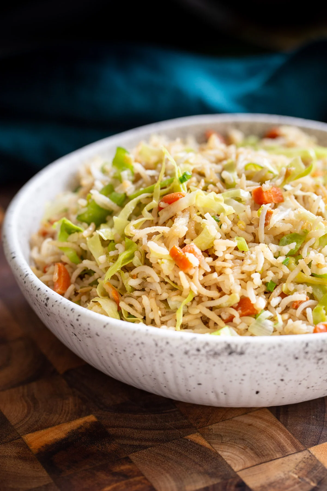

CHINESE SPICY RICE RECIPES:

INGREDIENTS:
- Chicken 1/2 kg
- Rice 1/2 kg
- Cabbage 1 smail
- Carrot 1
- Peas 1/2 cup
- Spring onion 1
- Green chillies 3.4
- Egg 2
- Salt 1 TBSP
- Chinies Salt 1 (TBSP)
- Black Pepper 1 (TBSP)
- Whole Spice Ground 1 (TBSP)
- Soya Sauce 3 TBSP
- Yellow Food Colour 1 Pinch
- Oil 1/2 Cup
METHOD:
- Boil chicken with pinch of salt and remove bones.
- In a non sticking pan take (2 TBSP) of oil fry cabbage and carrot untill cooked,don't overcook .now put boilled peas andd spring onion.stir for few minutes and set a side.
- Now heat (1/2) cup oil in(preferably)non sticking pan.add (2) baten eggs are mix vigorously,now add food colour
- Put chicken in it and stir for some time then put cooked vegetables.
- Add green chillies and all spices from salt to soya sauce, mix well.
- now put boiled rice stirand shake well by covering and holding the pan from sides so that all things mix well.